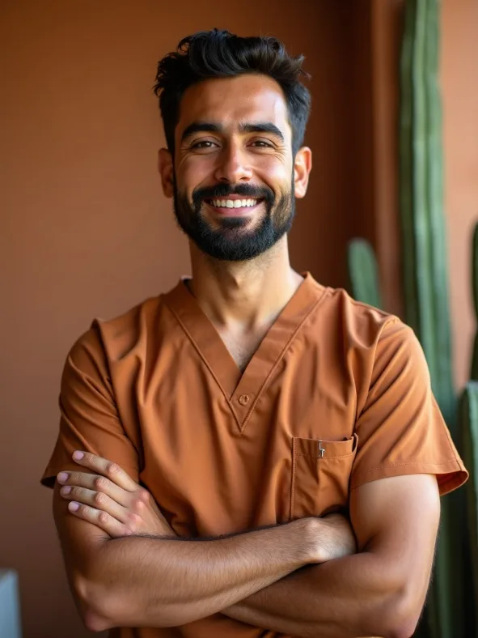
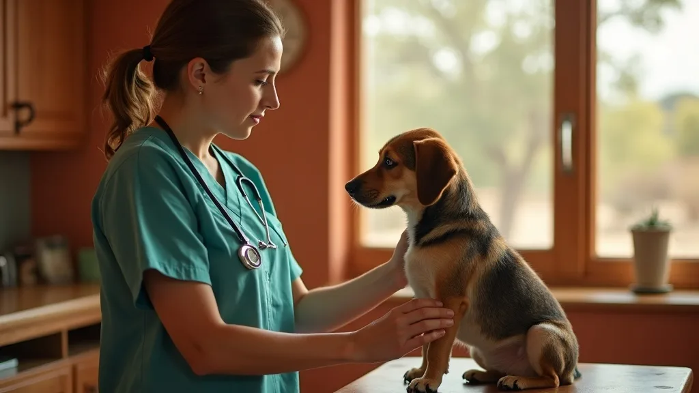

Dr. Elena Márquez, DVM
Co-owner · Chief of staff · Exotics
Grew up in North Las Vegas. Trained in exotic companion medicine because the valley was full of reptiles and birds with nowhere to go. Sees roughly one exotic every day she works.
Español
☉ Open today until 7:00 PM · Walk-ins welcome for urgent care · Se habla español
Small practice, low turnover. Your pet sees people who remember them — and remember what happened last time without reading it off a screen.
Co-owner · Chief of staff · Exotics
Grew up in North Las Vegas. Trained in exotic companion medicine because the valley was full of reptiles and birds with nowhere to go. Sees roughly one exotic every day she works.
Español
Co-owner · Urgent care & surgery
Runs the same-day service and most soft-tissue surgery. Spent four years in a busy emergency hospital before helping open Desert Paws, which is why our urgent triage works the way it does.
Feline medicine & dentistry
Certified in low-stress feline handling and responsible for the separate cat room. Does the dental work the rest of us would rather not, and does it better.
Lead technician
Runs the treatment floor and is usually the person who phones you with results. If you have ever had a lab result explained properly, it was probably Marisol.
Español

Urgent care technician
The first person most walk-ins meet. Triage, radiology, and an unreasonable talent for calming eighty-pound dogs who have decided today is not happening.
Español
Client care lead
Guards the same-day slots and walks you through every estimate line by line before you agree to anything. Books the appointments nobody else could fit in.

On staffing, honestly
Veterinary medicine has a turnover problem. Ours is low for unglamorous reasons: the schedule is published four weeks ahead, weekend shifts rotate rather than landing on the same two people forever, and nobody is asked to hit an appointment quota.
That is not a perk we advertise for its own sake. It is the reason the technician holding your cat this year is the same one who held her last year — and why the history in the file has a person attached to it.
Tell us the name when you book and we will put you back on their schedule wherever we can.